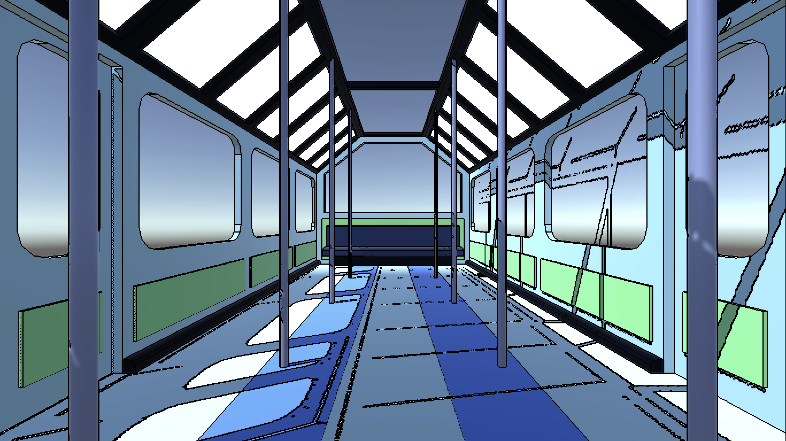

According to all known laws of aviation,
there is no way a bee should be able to fly.
Its wings are too small to get its fat little body off the ground.
The bee, of course, flies anyway because bees don't care what humans think is impossible.
Java
Python
CSS/HTML
Unity
Blender
Projects
Fragments in Process
An Immersive Virtual Reality Experience Centered Around the Ignite Series
In the words of the Brown Arts Institute, Fragments in Process is, "a digital reliquary: a collaborative memory that has yet to be formed."
As a creative designer on this project, my job was to elevate Brown University's Lindemann Performing Arts Center into a surreal, liminal space
that could be explored in VR. Turning the real world into the virtual world was not easy. Combining Blender and Unity workflows, I made every polygon count. To make the virtual Lindemann look like its real life
counterpart, I created procedural shaders in Unity that both added to the space's aesthetic appeal and optimized for VR.
Thinking In VR
Particle Plants
The leaves and plants in this video are made using a Unity particle system, but believe it or not,
so are the sun rays! To mimic real-time raytracing, a rendering process that is pretty but not practical in VR, I
combined a particle system with layers of shaders.
Shader Sea
Telling the VR processing system to simulate every single drop of water in an ocean would quickly overwhelm it.
Convincing water is still possible. To trick a flat plane into looking like an ocean, I overlapped displacement maps and
applied a highly specular and translucent material.

Edge Detection Algorithm
Fragments in Process is a highly experimental endevour, so I wanted to experiment with
non-photorealistic looks in VR. This shader, meant to mimic comic book inking, detects differences in an object's color
or topology, and if a large enough difference is noticed, it marks an outline.